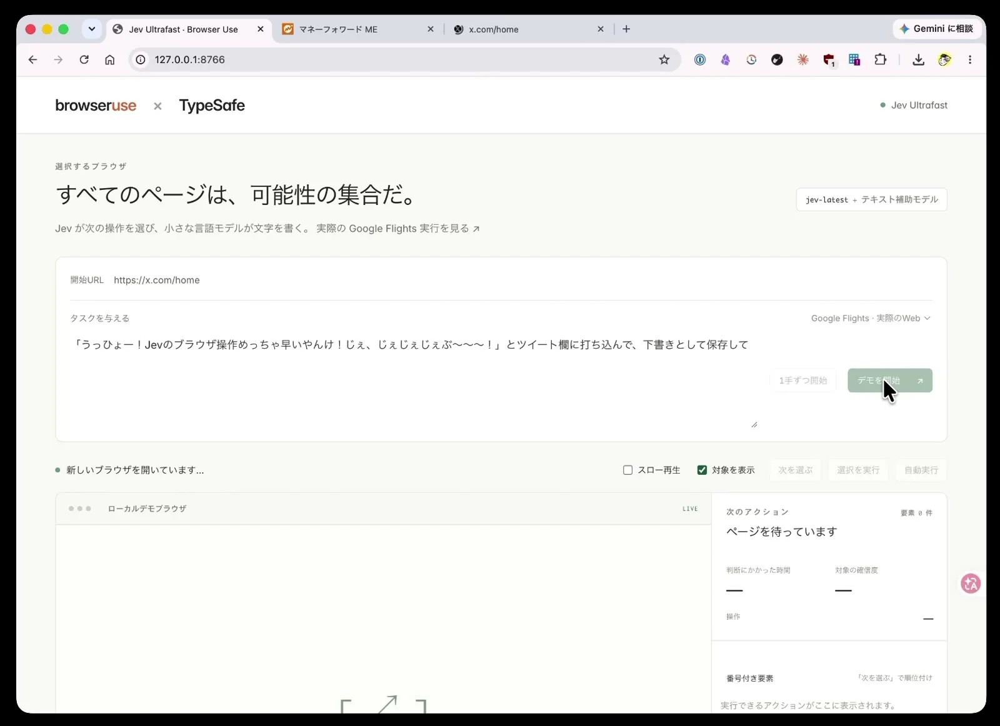
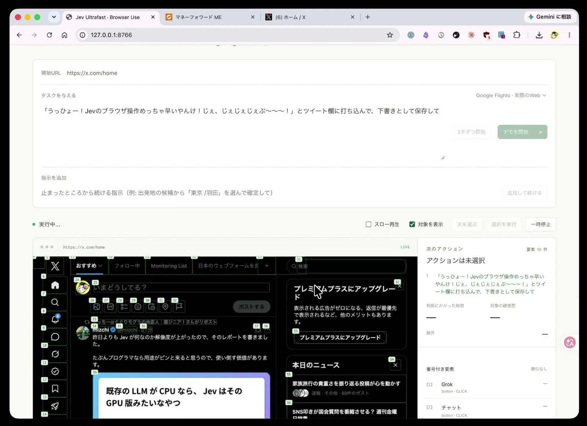

体験
元のbrowser-use版を、日本語のUIと任意のURLで動かせるようにしたフォークで、判断と実行を分けて見せるのが特徴。
- 「1手ずつ」と「自動実行」を使い分けられ、途中で一時停止できる。速い自動操作に、人が介入する余地が残る。
- 「対象を表示」で、Jevが選んだ要素を画面上に重ねて確認できる。
- 投稿の説明は「予約文を入れる操作」、画面のタスク文は下書き保存を指示している。取り消しやすい結末を選ぶのは失敗が多い状況では有効な設計。
- 作者は、毎日の業務で従来のLLM操作が遅く、Playwrightの手書きは画面変更で壊れる、という課題を挙げている。
キャプチャ
{kind=link}

（原寸の画像を開く）{kind=link}

（原寸の画像を開く）見る箇所開始URLとタスク文の入力欄、操作の切り替えボタン、右パネルの「次のアクション」と番号付き要素
入力から画面の変化まで
-
判断への入力
開始URL（https://x.com/home）と、自然文のタスク文。ページ上の操作できる要素には番号が付く（2枚目は要素59件）。（外部サイト）
-
Jevの判断
次に操作する要素とアクションを選ぶ。画面には「Jevが次の操作を選び、小さな言語モデルが文字を書く」とあり、モデル表示は「jev-latest + テキスト補助モデル」。
-
結果がUIをどう変えるか
右パネルに次のアクション、判断にかかった時間、対象の確信度、操作、番号付き要素の一覧を出す。「1手ずつ開始」「次を選ぶ」「選択を実行」「自動実行」「一時停止」で進め方を切り替えられる。
- 判断型の見立て
- Choice推定
- 「Jevが次の操作を選ぶ」という画面の説明と、番号付き要素からの選択という構成からの見立て。質問型は画面に明記されていない。
Jevとの適合
要素の選択という有限の選択に向き、速度の恩恵が大きい。ただし作者自身が失敗の多さを述べており、失敗時の回復や確認の設計が不可欠。掲載した2枚は実行前と実行中で、成功・失敗の結末は確認できない。
確認範囲と未確認事項
日本語の作者による録画デモ動画と、公開フォークのリポジトリを確認。作者は「失敗操作が多い」「バグだらけ」と明記している。成功時の速さは作者の印象で、動画から計測していない。
- 確認済み動画から得た2枚の静止画に見えるUIの構成とボタン、タスク文、番号付き要素、投稿文の失敗に関する記述
- 未検証成功率と実行時間、失敗の内容、フォークのリポジトリの中身、実際に予約や下書き保存まで到達したか
- 推定扱い「対象の確信度」の意味と算出方法。画面上のラベルからの読み取り
- 引用X投稿は2026-09-18（UTC）、リポジトリを示す追投稿は同日。動画から必要な範囲の静止画を切り出して引用。画面には第三者の投稿が映り込むが、掲載範囲はUIの説明に必要な部分にとどめた。権利は作者に帰属する